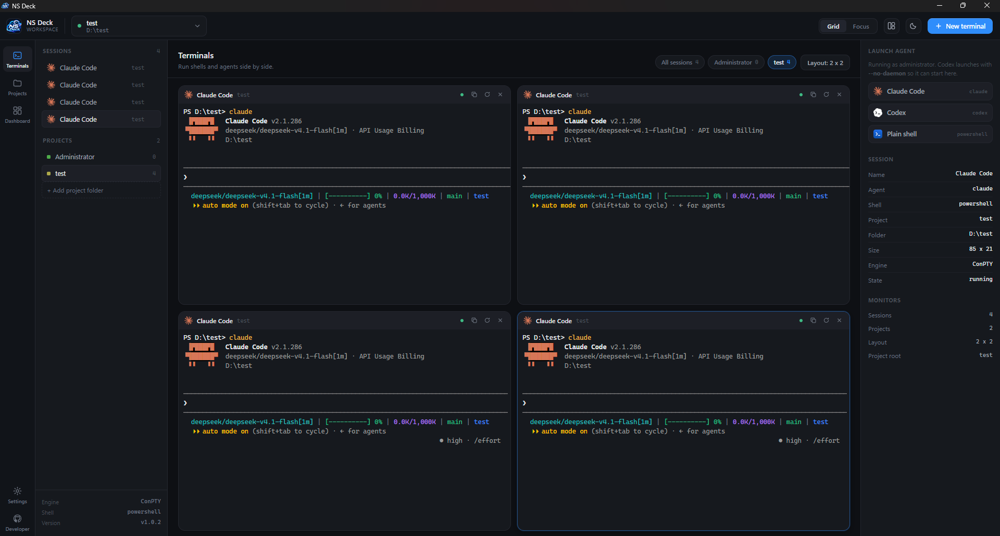

▦
Many terminals, one window
Host several live sessions at once and arrange them in a grid. Switch between single, two columns, two rows, a 2x2 square or three columns while sessions keep running.
Free - Windows and Linux - No account needed
NS Deck brings a project code editor, live terminals and a configurable AI coding agent together on Windows and Linux. Organise work by folder, launch Claude Code or Codex, and edit files in the built-in IDE.

Type the command yourself and the panel catches up by itself — no setup, no configuration.

Edit project files, keep shells in the right folders, and choose how your coding agent connects.
Host several live sessions at once and arrange them in a grid. Switch between single, two columns, two rows, a 2x2 square or three columns while sessions keep running.
Use PowerShell, Command Prompt, WSL and Git Bash on Windows, or Bash, Zsh, Fish and PowerShell 7 on Linux. Unavailable shells are clearly marked.
Pick a project folder and every new terminal opens in it. Work with one project or many at once, and filter the view by project whenever you need to.
Browse files, create folders, open multiple tabs, search and replace across the project, review Git changes, and use diagnostics where a language service is available. Files without a Monaco language mode remain editable as plain text.
Connect OpenRouter, Ollama or a custom OpenAI-compatible endpoint and choose a model. Manage Skills, review proposed file changes, and approve writes or commands before they run.
Launch either agent from the side rail, from the Projects page or from the Dashboard, each with its own brand icon. Not installed? The button says so instead of failing quietly.
Start an agent by typing its command yourself and the panel renames itself and swaps in the right icon automatically.
Paste multi-line text with Ctrl+V or the right-click menu, and copy a selection without losing the normal stop-the-command behaviour of Ctrl+C.
A calm dark theme that is easy on the eyes, with a light theme for bright rooms. The editor and its libraries work offline; remote AI services need a connection, while a local Ollama endpoint can run on your machine.
The app checks for new versions in the background and offers to install them. Projects, theme and layout stay exactly where you left them.
A single-window workspace instead of a pile of windows.
Free. No account or sign-in needed to download. Existing projects and settings are preserved when updating.
NS-Deck-Setup-1.0.4.exe
NS-Deck-1.0.4.AppImage - Linux x64
chmod +x NS-Deck-1.0.4.AppImage../NS-Deck-1.0.4.AppImage from a terminal.Prefer to browse the files? See the release page - it also has the version manifest the in-app updater reads.
No. Your projects, theme and layout live in your per-user application data folder, separate from the app installation, so they survive updates on Windows and Linux.
The installer does not have a paid digital certificate yet. That is not a sign the app is harmful. Choose More info, then Run anyway.
Download the x64 AppImage, mark it executable, and launch it. If your distribution does not include FUSE 2 compatibility, install the matching package from its repositories.
NS Deck already handles this. Open Settings, then Agents, and use Fix Codex for plain terminals. After that the codex command works normally everywhere, including a Command Prompt you open yourself. A backup of your Codex config is kept and the change can be undone.
They are optional. If they are already on your machine the launch buttons work right away; otherwise the app clearly marks them as not found and everything else keeps working.
NS Deck checks GitHub for app updates. If you use the built-in AI coding agent, prompts and project context can be sent to the provider endpoint you configure. A local Ollama endpoint can keep that processing on your machine; your provider's data practices apply when you choose a hosted service.
This repository hosts the public download site and application releases. It does not contain the NS Deck application's source code. Feedback and bug reports are welcome through the issue tracker.